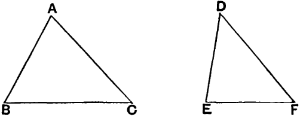

Proposizione I.26
The conclusions of the next proposition and the previous are partial converses of each other. Together they say that if two triangles have two sides equal to two sides respectively, then the base greater than the base if and only if the one of the angles contained by the equal straight lines greater than the other.
Proposizione I.26 - If two triangles have two sides equal to two sides respectively, but have the base greater than the base, then they also have the one of the angles contained by the equal straight lines greater than the other.
Proof - Let ABC and DEF be two triangles having two sides AB and AC equal to two sides DE and DF respectively, namely AB to DE, and AC to DF, and let the base BC be greater than the base EF. I say that the angle BAC is also greater than the angle EDF. If not, it either equals it or is less.
Now the angle BAC does not equal the angle EDF, for then the base BC would equal the base EF, but it is not Prop I.4. Therefore the angle BAC does not equal the angle EDF.
Neither is the angle BAC less than the angle EDF, for then the base BC would be less than the base EF, but it is not Prop I.24. Therefore the angle BAC is not less than the angle EDF .
But it was proved that it is not equal either. Therefore the angle BAC is greater than the angle EDF.
Therefore if two triangles have two sides equal to two sides respectively, but have the base greater than the base, then they also have the one of the angles contained by the equal straight lines greater than the other.□